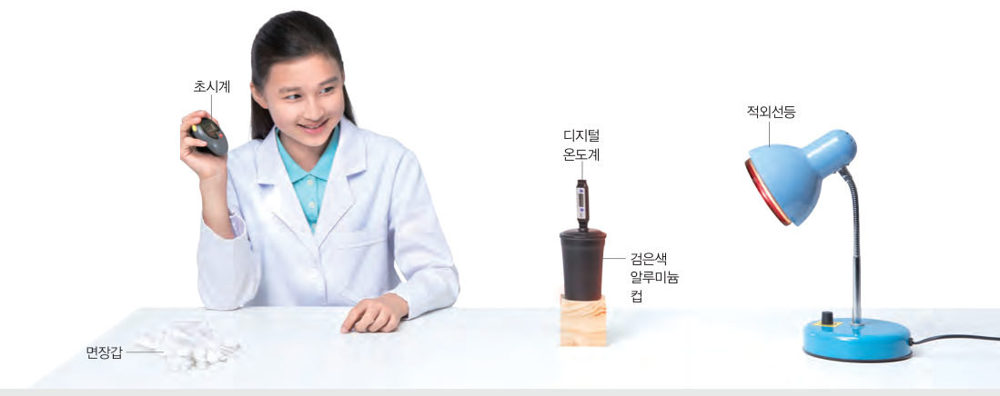
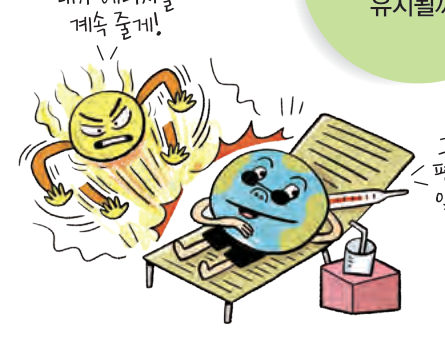
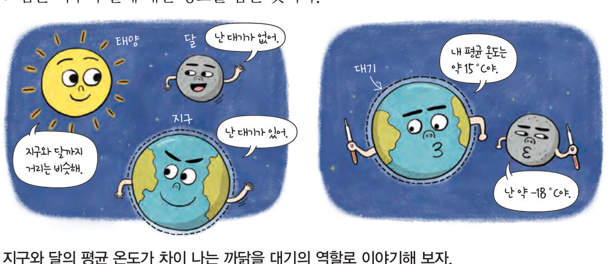

에너지를 계속 받는데도 지구 평균 기온은 왜 일정할까? 적외선등과 검은색 컵의 가상 실험으로 복사 평형을 그래프로 확인하고, 대기 스위치를 켰다 꺼서 지구와 달의 복사 평형과 온실 효과를 비교해 보자.
모든 물체는 복사(열이 물질의 도움 없이 직접 전달되는 방법)의 형태로 에너지를 흡수하고 방출한다. 다음 탐구로 물체가 흡수하고 방출하는 복사 에너지양을 비교해 보자.
| 평가 기준 | 스스로 평가 |
|---|---|
| 탐구 기능 실험 기구를 바르게 설치하고 실험을 수행하였는가? | |
| 탐구 기능 시간에 따른 컵의 온도를 정확하게 측정하였는가? | |
| 인성 실험 과정에서 모둠 구성원과 협력하였는가? |
검은색 알루미늄 컵은 적외선등이 방출하는 복사 에너지를 흡수하면서 온도가 올라가고, 그 온도에 해당하는 복사 에너지를 방출한다. 컵의 온도는 그림 2-2와 같이 처음에는 올라가다가 시간이 지나면 일정해진다. 컵이 흡수하는 복사 에너지양이 처음에는 방출하는 복사 에너지양보다 많지만, 시간이 지나면 컵이 흡수하는 복사 에너지양과 방출하는 복사 에너지양이 같아지기 때문이다. 어떤 물체가 흡수하는 복사 에너지양과 방출하는 복사 에너지양이 같은 상태를 복사 평형이라고 한다.

태양이 방출하는 복사 에너지를 태양 복사 에너지라 하고, 지구가 방출하는 복사 에너지를 지구 복사 에너지라고 한다. 지구는 태양 복사 에너지를 흡수하고 지구 복사 에너지를 방출하면서 복사 평형을 이루고 있다.
지구와 달은 태양에서 떨어져 있는 거리가 거의 같다. 그러나 지구는 달에 비해 평균 온도가 매우 높게 나타나는데, 이는 지구가 대기로 둘러싸여 있기 때문이다. 대기가 없는 달은 태양 복사 에너지를 모두 달 표면에서 흡수하고 이를 다시 복사 에너지로 방출하면서 복사 평형을 이룬다. 하지만 지구는 대기가 있어 지구 표면에서 내보내는 지구 복사 에너지 중 대부분을 대기가 흡수하였다가 다시 우주와 지표로 방출한다.
지구는 대기가 지표로 방출하는 복사 에너지 때문에 평균 기온이 높게 나타나는데, 이를 온실 효과라고 한다. 지구 대기를 이루는 기체 중에서 지구 복사 에너지를 흡수하여 온실 효과를 일으키는 기체를 온실 기체라고 하며, 수증기, 이산화 탄소, 메테인 등이 있다.
| ⑴ 컵 속 공기의 온도는 시간이 지날수록 계속 높아진다. | |
| ⑵ 컵은 22 분까지 복사 에너지를 흡수만 한다. | |
| ⑶ 컵은 22 분 이후에 복사 평형을 이룬다. | |
| ⑷ 30 분일 때 컵 속 공기의 온도는 31 ℃일 것이다. |
| 평가 기준 | 스스로 평가 |
|---|---|
| 복사 평형 원리를 설명할 수 있다. | |
| 온실 효과를 지구 복사 평형의 관점으로 설명할 수 있다. |